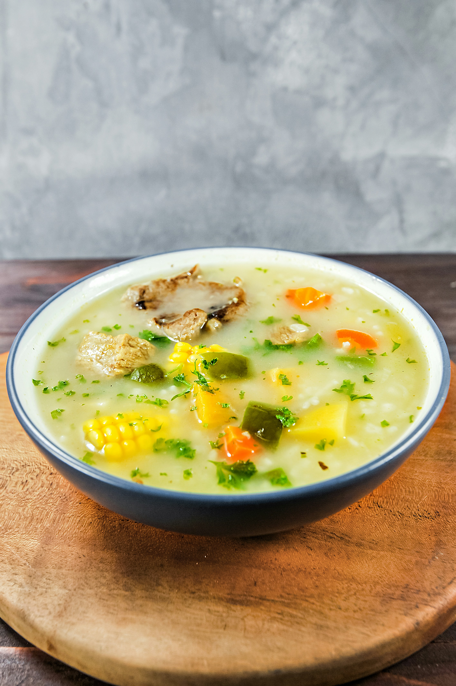

Feel-Better Chicken Soup

Description
The perfect soup to have when you're feeling under the weather.
Ingredients
- 340g skinless, boneless chicken thighs
- ⅓ cup jasmine rice, rinsed
- 4 garlic cloves, thinly sliced
- 1 5cm piece ginger, peeled, thinly sliced
- Salt
- 2 small sweet potatoes, unpeeled, cut into 1,2cm-thick rounds
- 2 Tbsp. fresh lemon juice
- 2 Tbsp. soy sauce
- ½ bunch cilantro, coarsely chopped
- Freshly ground black pepper
Steps
- Bring chicken, rice, garlic, ginger, and 5 cups water to a boil in a large saucepan. Add a big pinch of salt. Reduce heat to medium-low and simmer, uncovered and stirring occasionally, until rice has swelled and chicken is firm, 10–12 minutes.
- Add potatoes to pan and cook over medium-low heat, still uncovered and stirring occasionally, until soup is thickened and potatoes and rice are tender, 15–20 minutes longer. Transfer chicken to a bowl and shred with 2 forks, then return to pot. Stir in lemon juice and soy sauce; taste soup and season with salt if needed.
- Divide soup among bowls. Top with cilantro and lots of black pepper.
- Do Ahead: Soup (without cilantro) can be made 3 days ahead. Transfer to an airtight container and chill. Reheat over medium-low, adding water to thin as needed.
Home